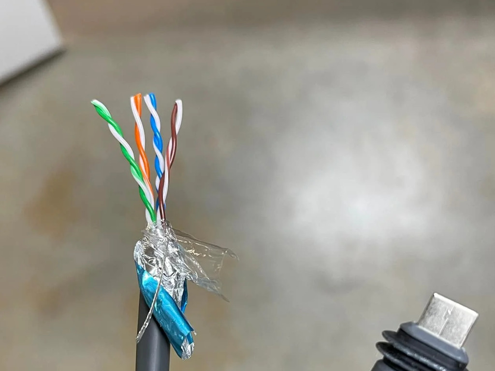
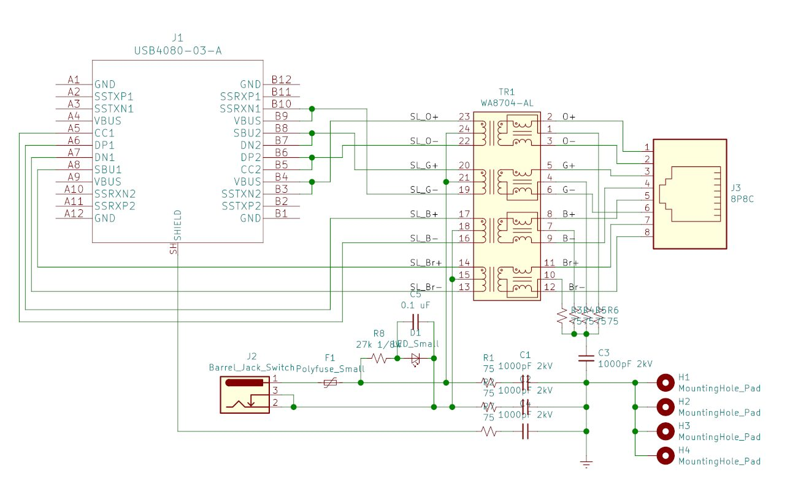
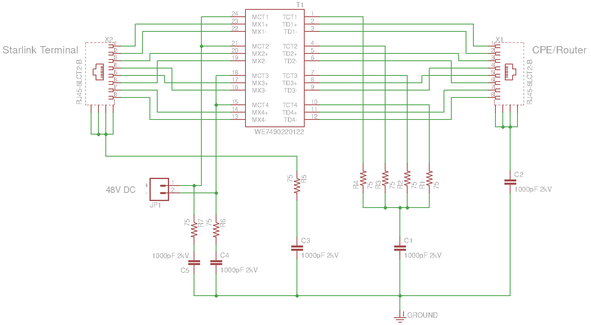
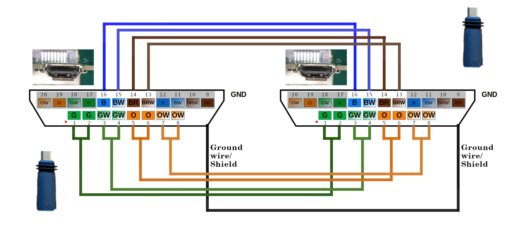
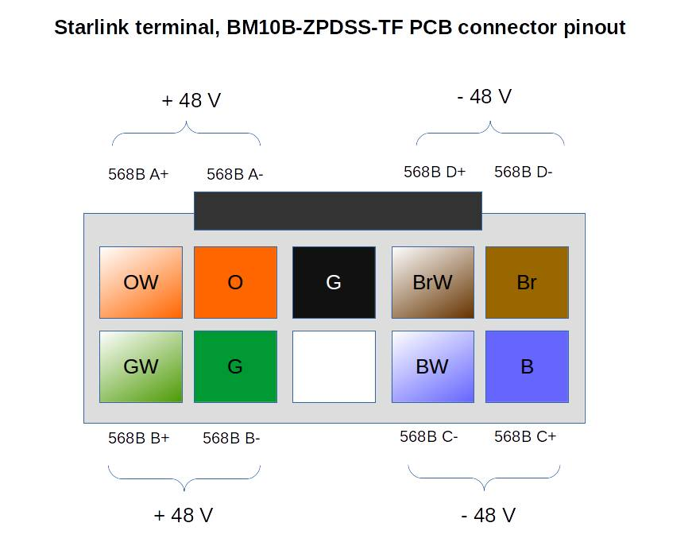

Later SpaceX released an official Ethernet adapter that brings up the port back.
Probably SpaceX has some usage stats that show most users use only WiFi.
{kind=link}
The Starlink ethernet adapter has the Ethernet port, Dishy proprietary port, and Dishy proprietary connector.
{kind=link}
{kind=link}
It’s easy to open the plastic cover with a flat screwdriver. Not much in there:
{kind=link}
The Double-sided board contains connectors and an Ethernet circuit.
{kind=link}
{kind=link}
So, this is just a Dishy Ethernet + PoE passthrough and AUX Ethernet transformer with a required minimal circuit.
This means that the router contains a 2-port switch.
{kind=link}
The second port is used for the AUX Ethernet, but the Ethernet transformer is now in this adapter. It saves a few bucks and some space on the router board. But I don’t think this is good to move Ethernet magnetics so far away from the PHY IC.
Here is a schematic of the adapter:

Thicker wires are used for the Dishy Ethernet+PoE passthrough.
Thinner wires connect the AUX Ethernet circuit.
The Starlink proprietary connector it’s a 20-pin interface that looks like a mini-HDMI but is not the same.
There is an SPX marking on the connector, so I guess it’s custom-made for SpaceX.
Here is a pinout of the socket (router and adapter inputs):
{kind=link}
It would be nice to get the new router and see if it’s possible to integrate this circuit inside the router.
UPDATES, June 14
SPX proprietary connector it’s a USB-C connector in an unusual shape. You can bend the USB-C to fit the SpaceX one.
The terminal use 802.3bt PoE that is carried over all eight lines: 1-2, 3-4, 5-6, 7-8, 13, 14, 15, 16.
You can find the custom PoE injector schematic in the comments below.
I managed to get the new router, so there will be some updates.
Impressive Work and thank you so much for sharing it
I don’t even want their router… A wire coming from the dish, inside, and it’s got an ethernet plug on it. I set up PPPoE or whatever, and get an IP. I hate it when companies for me to do dumb things just because some of their customers are dumb.
I’m currently using a cell phone with uncapped service through a DIY router made of an ODROID XU4 w/ ArchLinuxArm serving DHCP and DNSmasq services. I’m not a child. I don’t need or want Big Brother controlling everything.
Stop helping me to death!
True. but most people don’t even know how to set up a router… So yes u may not be stupid when it comes to technology but a lot of people are.
Most people don’t even know what a router is. They should at least give us the option, though.
How do i download this?
they should have included this in all their kits(probably extra $5 cost to make) instead of us getting the router and find out there’s not an ethernet port, now it’s a month and a half for wait for this, annoying af
One limitation on the router (that comes with rectangle dishy) is that you can’t use arbitrary SSID names. For example my existing network is called something like “example.net” but SL router won’t accept the name with a “.” In it. So I have to change every device on my network or add another access point. Annoying and unnecessary.
Apparently Elon never installed antennas as a kid. Just one drop or dirt or from dragging that connector around or one chunk of plaster from trying to shove it thru a hole in the wall will ruin everything! He should use two cat cables. One for data and one for the power hungry array. Then a couple of 1/4 inch holes will take you anywhere!
It is possible to explain what happenis if I did not disable the wireless on the startlink router. I have a situation where I woud like ot keep using the wifi on the starlink and want to connect a single device to the port in the adabtor not another router. It would not matter if it was not the same network address as the other devices so long as both the wireless and the lan had internet access.
Thanks
@ross You can leave the wifi active while using the Ethernet, both are served DHCP from the router on the same subnet (192.168.1.x not changable as far as I’ve been able to see)
@jim, it’s far easier to snap the clip off of a RH45 than to damage these connectors
Thanks for this. It will be a great outcome so I have ordered it. We are outskirts of Brisbane Australia and the internet is pathetic. The Starlink is great and 5 times faster when NBN is at its best 100 times faster when NBN is struggling. It’s expensive but a great result for us. Thanks
But it’s trivial to replace an RJ45 connector.
I’ve had nothing but issues with the proprietary stlink connections. Skyrocket (their propensity to batch all service request responses for a given quarter to day #89 is another serious detractor) has “detected” that my cable is defective, though I have been unable to get ANY up or down throughput since receiving and DIY installing the second complete (“inspected/tested” returned) system, following the failure of my initial install after 2 months of relatively stellar performance. I have decided to order a new Ethernet adapter and move the installation from a “great” (Starlink app) location on the lower edge of the roof to the roof peak, on it’s southernmost (should be zero obstructions) location. Received the mount, but the ballast will apparently be another week or two to ship; so hopeful.
Thanks Oleg Рreally useful article and you obviously know your stuff. I had a bit of a disaster with my starlink lead yesterday in that it got cut. I have repaired it and the service now works fine but the Ethernet connection does not. I can have the starlink lead going to the Ethernet adapter and into the router but there is no internet from the Ethernet lead itself plugged into the adapter. Do you think it’s possible that on cutting the lead it could have damaged some of the Ethernet circuitry and so now the Ethernet part of the adapter doesn’t work but the starlink bit still does?
Hello.
Yes, that’s possible.
Duncan, I have done the same thing. My lead got cut and I repaired it. After that I cannot get the ethernet adapter to work. I have great wifi internet but no ethernet. I took one step further and bought a second adapter but it does not work either. Im thinking one of the wires that has power sent power down another wire as it was cut. Just cant figure it out yet. At least my wifi still works and dishy still moves. I just have to figure out if that excess power went to the dishy or the router to make the adapter not work.
HI Jonathan. I have now tried a new Ethernet adapter (in fact 2 as starlink also sent me a replacement) and a new wire but still no better. Starlink are now sending out a new router so presumably that should fix things and as you say it feels like it must have been something that was damaged in the router as my wife, dish all works fine apart from the Ethernet.
Hi Duncan, did the new router fix the problem? Thanks, Dave.
Hi Dave, Yes the new Starlink router did fix it so guessing that it was something in the ethernet adapter that got damaged / shorted somehow.
Duncan ,
I had the same thing happen: cable was broken and I repaired it. WiFi works great but no connectivity out of the Ethernet Adapter. After you received the new router, did you try using original Ethernet adapter to see if it was okay.? I am curious if it is something in the router that get fried or in the Ethernet adapter when the cable get cut?
Hi Alan, I wouldn’t swear on it but I think starlink sent me a new adapter (or I even bought one) before replacing the router which sorted it.
Jonathan, we’re you ever able to get your adapter working? I have the same problem. Thanks, Dave.
I had the same thing happen: cable was broken and I repaired it. WiFi works great but no connectivity out of Ethernet Adapter. What did you wind up doing?
My Ethernet adapter has a connector with only 16 contact pins inside (Wire Connector that plugs into POE router). Your diagram is not correct at least for my version I received 17 May 2022.
Interesting. I don’t understand how they could fit in there all required signals. They need 18 pins at least.
Will you open your Ethernet adapter to check what’s inside?
Look into the plug end that fits into the router. I see only 16 contacts loaded, the other four side contacts are black spacers (at least on mine). Your photo of the wire end plug looks similar. I’ll take a closer look at mine later, router is still on the way.
What’s more interesting is rectangular Dishy uses ~185W power when snow heaters on. That is a very high power level for POE, and at the extreme end of range for any power injection transformer. Usually 140W or 150W is the upper limit, but perhaps Elon has some special power magnetics made. I’ll take a look at that.
Generally POE is a not the best idea at higher power levels – even Cat6 (23AWG) on a long wire run wastes a lot of power just heating the cable – not exactly green.
.
My Ethernet dongle adapter seems the same once opened up, but pins 9, 10 , 19, 20 on your diagram, on the wire-hanging router side plug, they have a black coating – which doesn’t conduct well. I thought they where plastic spacers, but when you examine the contacts under a microscope, the edge pins are covered in what looks like black paint or coating on those contacts. Your photo of that plug looks the same.
What is curious it looks like they are using double contacts for half the POE – when they should be using double contacts for all four wire pairs for that size contact surface area in the connectors.. If you look at the MikeonSpace YouTube video of the Dishy Gen 3 teardown part 1, the POE injection / extraction transformer on the dish is Wurh 7490220126. People are reporting Dishy needs 180W power with snow heaters turned on, but that same Wurth transformer is supplied with the MAX5995A POE PD reference design kit sitting on my desk – and that transformer is good for about 70W power max., Not sure what they are doing here. In fact it looks like Starlink dish is using the same basic POE reference design, but doing something goofy along the way with wiring contact assignments.
Over all it seems like Starlink is trying to make everything cheap as possible – like not supplying a reset switch on the router. They couldn’t spare the pennies cost for a reset switch? The Rectangular Starlink dish is just glued together to make it not very repairable or recyclable…I guess filling the landfill is preferable to spending a few pennies for housing screws.
Weird. Some of the system is impressive, but the design of the Gen 3 user terminal seems really clumsy.. The round dishy’s seemed to be much better – even though they are heavier.
You can check out my partial reverse engineering of the gen2 router: https://olegkutkov.me/2022/04/30/how-to-add-ethernet-port-to-the-gen-2-starlink-router/
There is PoE circuit analysis.
remember that this doesn’t have to be compatible with any POE standards, it’s a proprietary system with proprietary connectors so you can’t connect it with anything else.
This opens up flexibility for transferring power they would not have if they were following standards.
Yes, there is NO real standard for anything over 71W on POE (there is a reason for that). POE kinda sucks for longer cable runs and higher power, and is really not Eco-friendly in these applications – wasting quite a bit of power over a year just heating the little 24AWG Cat5E patch cable that Starlink provides.. These rectangle dishes are measuring well over 70W (I’ve read >180W with heaters on, although I have to test that here) And that’s the point. No matter what convoluted wiring technique (I’ve seen them all on various high powered industrial Internet equipment – and they all fail at some point), you have to inject / extract power on the Ethernet isolation coil center taps and carry that power over the Ethernet cable. .Certainly the Ethernet isolation transformer as supplied on Gen3 dishy is not rated for higher power levels seen on Starlinks, so I suspect there will be reliability issues over time, especially in hot weather. The cable itself is a weak link too – especially when a Cat5e patch cable is trying to carry higher power.
Oh well. We’ll just have to see what breaks over time.
Hi, Great article along with your “How to add Ethernet port to the Gen 2 Starlink router” article.
I’m having to extend the cable between the the dish and router (Gen2) and struggling on a couple of important points which I have not be able to tell from your articles.
1) what color pairs are the data on (From your picture above, it looks like Blue & Brown, however under the Orange and Green you also indicate “data”
2) how many pairs are used for the Power (again from the picture above, it looks like its just 2 pair for power Orange and green. I would have though based on the power requirements of the dish, they would have used all 4 pairs.
You help in clarifying this would be appreciated.
Hello. All eight wires are used for the data. It’s required for the 1Gbps connection.
Green/Orange pairs are duplicated on the connector and used as the main power rail, but you are correct – Blue/Brown pairs are also used for the powering.
Thus all eight wires are used for the data and the power.
Hello oleg
. How i can intery in my dish and rest factory to remove the old email…
I was hoping to set up the dish on my motorhome so I can move it easily with out a lot of work to connect the wires. I have the round dish at home and it is just a network RJ45 connector. So much for my plans, I noticed there are 20 pin on this one. Would it be possible to split the wire coming from a dish connect 2 RJ45 connector to plug into a water tight connector on a box and reconnect them inside the box. This way I would only discount the 2 RJ45 connects when removing the dish I would use the round dish on the motorhome but the square is much easier to store just don’t like how much force it takes to remove the wire then what todo with is when disconnected.
Sure, you can use regular RJ45. Just cut the wire and crimp the connector. It will work without issues.
How many wire are in the cable on the dish side what worries me is there are only 8 pins on the RJ45 does the dish only use 8?
8 wires between for dishy, it’s a standard utp cat5
Oh, so it looks like the main cable is a 4 pair cable so there are only 8 wires. But for the Network adapter wire has more wires between the adapter and the router
Extra wires are for the Ethernet port on the adapter.
Ciao Oleg. you maked a great website very helpful. thanks for all. I need if you can suggest a better method for join the very thin cables of the extra pair for the network adapter because i think that is not crimpable in a standard rj45 plug as i maked for the primary and thick cables.
Is there a ground wire in the gen 2 dishy cable? or just the 8 standard cat 5e wires? i have unshielded cat 5e at my demarcation point going into my house and am concerned splicing will not work.
Yes, it’s a shielded CAT5

Thank you for this. Can you help me with which pairs specifically carry PoE from the aux adapter. My goal is to wire in a 52v PoE injector after the SL router to provide enough power for the dish at 270’ of Cat6. I’d like to keep the SL Router, but will run into over voltage with PoE in series. Instead of painstakingly putting a meter on 4 pair, thought you might be able to provide an answer? Thanks.
Hello. You can use the schematic of the PoE injector. Designed for the square terminal.
J1 it’s a USB-C connector. You can bend the USB-C to fit the SpaceX connector

Hi! Can’t you provide the injector schematic with ethernet connector instead of the proprietary type-c-like?
Hello, sure.

Thanks!
gigabit PoE uses all 8 wires
Hello and thank you for this Oleg and all of the other useful comments below. I am an amateur at this and would appreciate any direction. I have a 1st generation Starlink (round dish) and a very long bungalow. Also, given the terrain, I need to connect the Starlink at one of the bungalow. I am using a series of Deco M4R’s. I’m connecting one Deco M4R directly to the Starlink router. Should I be using an ethernet switch for the connection? If yes, any suggestions on a brand/type? Any other suggestions on setup of course appreciated and thank you.
Hello. There are no specific requirements. You can use any decent switch with your Starlink router. You can run the cables then and connect WiFi access points. You can build an UniFi network, for example. https://community.ui.com/questions/Starlink-and-UniFi-Security-Gateway-Connectivity-Details/4b69ebe7-6405-4c1c-81df-95eba1d1ce81
The Starlink router is not mandatory. You can ditch the Starlink router and use 3rd vendor device. Just hook up your router (it might be Ubiquiti or MikroTik) to the white port of the power brick and configure it for Auto IP (DHCP client).
Then you can run the cables to your devices and connect WiFi access points if needed.
I believe that the 1st gen starlink dishes can be powered by a PoE device/switch and have heard that it’s possible to use the dish with a normal router. I purchased one, but have it loaned out for a couple months, so I won’t be able to experiment to confirm this for a while.
But in any case, you can hook up something on the inside of the stock router that doesn’t know or care anything about starlink.
I am not a fan of mesh networks, they can work if they aren’t heavily loaded, but they will tend to fail faster due to the increased airtime congestion. If you can run a wire between APs, you can get much more reliable results.
I run the wireless network for the Scale conference (picture 3500 geeks showing up to use your wifi), and we routinly run 100+ APs with the same SSID to cover the area. You just need to make sure that you only have one DHCP server for the entire network.
I did a presentation on this a decade ago https://www.usenix.org/conference/lisa12/technical-sessions/presentation/lang_david_wireless
Sure, the original router is not mandatory. You can use any router with both versions of the terminal.
Just run it in DHCP client mode, and you will get an IP address from the satellite after the connection.
Also, there is a dishy web interface at the static address 192.168.100.1
Hi РI don’t know much about PoE, so I couldn’t tell from the diagram whether the aux Ethernet port on the adapter supplies power. Could you comment on this?
Hello. There is no power on the AUX Ethernet. It’s just 1Gpbs Ethernet.
This is fantastic — Thank you.
Curious if someone could take two standard Cat6 cables (T168B straight-through with RJ45M ends) and create an adapter (2 RJ45 female into 1 USB-C-M) OR simply wire the 2 Cat6 cables to USB-C-M ends as below. This would allow us to use standard off-the-shelf cables and allow people to have customized lengths, get their cables through existing conduit/holes/etc.
(this reply box doesn’t allow pictures, but I made a pretty one! — here’s a pasted table from Excel:
C1 is cable1, C2 is cable2)
Cat6 Color USB-C StarLink
C1-1 Br A6 14
C1-2 Br/W A5 13
C1-3 G B3,B4 1,2
C1-4 Bl/W 15 15
C1-5 Bl 16 16
C1-6 G/W B5,B6 3,4
C1-7 O B7,B8 5,6
C1-8 O/W B9,B10 7,8
C2-1 Br A1 9
C2-2 Br/W A2 10
C2-3 G A9 17
C2-4 Bl/W A3 11
C2-5 Bl A4 12
C2-6 G/W A10 18
C2-7 O A11 19
C2-8 O/W A12 20
– – B1 N/A
– – B2 N/A
– – B11 N/A
– – B12 N/A
For that matter,
could one just combine two Starlink cables with a USB C Female to Female Adapter
(ex: https://www.amazon.com/Adapter-Dbilida-Support-Compatible-Thunderbolt/dp/B0B6VLDNRN/)
and avoid splicing SL cables altogether?
If you bought two SL150′ cables you could approach that 100m length at 300 feet. Also, this particular adapter is only rated to 100W so the snow melting feature may need to be turned off for safety. Since they are both female, no USB-C bending would be necessary as Oleg indicated for the male USB-C approach. One may need to be carefully about plug orientation on either side and a weather proof junction box for outdoor place.
This could also allow for an easier plug-play approach to moving dishy –like Paul was looking for his RV– by using the short cable with longer one to stow and go.
Thoughts?
Anyone tried this yet?
The connector is not USB-C, it’s similar, but not symmetrical
by no means am i network wire knowledgeable person. tried reading this and clearly my first sentence is correct. Regardless, wondering if using the starlink internet adaptor, cut the startlink cable proprietary plug off the adaptor and use the wires to hook 48 volt power to the correct wires to power the starlink dish(v2)? my thought is that the ethernet port on the adaptor could be used to hook to wifi router. thus i have the startlink cable port, ethernet port and function as a POW injector in a single small package. my goal is to minimize size, remove AC dependency, and make the entre package more mountable than the Starlink router. .
https://www.offgridcto.com/2022/05/23/starlink-on-pure-dc-power/
Good afternoon, is it possible to connect power to this board so that KIT can work via POE? For example, if I solder a DC connector here?
For example, if the 110/220 power in the outlet disappears, I connect the backup batteries via POE or DC via the ethernet connector
Thx
Hello, Thanks for all your work on this.
Have you looked at the new High Performance dish pinout yet? I just cut the cable to replace my Gen2 dish and noticed they at least changed the color code.
It blows my mind they sell a $2500 dish for RV’s, but don’t offer a DC power option.
Thanks for your help!
Hello. I would like to look at HP but I don’t have it yet. It costs a lot, as you mentioned.
I have one and we already cut the cable… Could I pay you to help me figure it out remotely?
If so please email me privately. Thank you!
I too cut my cable to install it through the roof and into the wall of my motorhome. I also wanted to be able to take my dish off the roof and place it out in the open if I was under trees. I have done this with Gen 2. To do this I wanted network RJ45 on the cable then I could you what I have left over from the Gen 2 dishy as my cable. To my surprise the cable they use has a larger wire or smaller gauge I think it was 22 AWG and like you say and a different color code. I had a hard time trying to get the dish to boot up once I found some RJ45 that would take the larger wire. The wire size out the outside shielding is 1.45mm. I found some on Amazon https://www.amazon.com/gp/product/B071GXPTVZ/ref=ppx_yo_dt_b_asin_title_o01_s01?ie=UTF8&th=1
These did not work well in the punch down tool I have so I had to us a flat blade and push the pins down more. Once I was able to get a good connection with a good coupler with a shield I got the dishy working. I tried to use the wire that came with the Gen 2 dish but I could not get it to work. The dishy would act like it wanted to boot up but would shut down. I tried to measure the voltage but the device I have would not work. My theory is that the voltage drop in the 24awg wire and across the RJ45 connector is to much.
Well, I did a lot of reworks to RJ45, like this one:

I used shielded CAT6 connectors and standard color code OW-O-GW-Bl-BlW-G-BrW-Br. I did the same procedure for Gen1 (round Dishy) and Gen2 (square). Everything is okay.
Everything is okay.
Yep, it’s harder to push Starlink wires inside the connector, it requires some practice üôÇ
Is it possible to remove router-side cable and connect thin wire point with thick wire points to use Ethernet socket to provide PoE+data.
Yes. I already did this mod. Some details are there: https://www.reddit.com/r/Starlink/comments/zuo0f3/reworking_gen2_starlink_router_to_rj45_lan_port/
The full article is upcoming
I wonder if the 4 extra wired in the connector are used to lower the IR drop in the longer cable. All indications are that the shorter Dishy cable only has 4 pairs in it not 6.
Dishy cable is always four pairs, no matter what length. Four extra wires are only for the Ethernet adapter. As described in the article.
On your schematic, there are 20 wires in the Ethernet Adapter cable. 8 are for the local ethernet, 8 pass through to Dishy, and there are 4 more POE wires, which pass through to Dishy as well. I was speculating about those four.
Ah, those pins are just paired inside the connector
Here is the cable wiring diagram:

Thanks for the great blog post!
Hi Oleg,
I want to cut my rectangle dishy down and mount it to the roof of my 4wd. I spend some time beyond cell networks for my work and it would make life easier and safer to run Starlink from pure 12v.
The method to do that is quite well established, POE injector, 12/24v to 48v step up, travel router etc.
What I am asking for is a pinout for the internal cable between the antenna array and the bottom of the pole? I need to be able to terminate that cable with a female cat6 end to connect the above 12v hardware for a truly compact solution
Thanks for your good work.
Hello,
Here is the pinout of the internal connector/cable. I hope this is going to help you.
Pins are labeled according to TIA/EIA-568-B

Thank you very much Oleg.
Thanks a bunch! Your detailed analysis helps us understand this system.
Curious, you mention “SPX proprietary connector it‚Äôs a USB-C connector in an unusual shape. You can bend the USB-C to fit the SpaceX one.”
Is it possible to bend the female SPX to accommodate standard male USB-C?
Just wondering if that adds any possibility to use a USB-C connector. Eg without the proprietary cable.
Definitely maybe not worth it, but curious all the same.
In terms of Ligtning protection and surge protection what are your recomentadions?
My understanding is the cable from the dish is a shielded cable with a drain wire, so you don’t need a ground. It’s grounded through the power supply.
Would be advisable to insert the lightning surge protector between the power supply and the router, sacrificing the power supply if needed?
Or can the lightning surge protector be inserted in between the dish and the standard Ethernet adapter?
There is a flaw in the whole system design.
Adding some protection inside the adapter to the Dishy->Router line is better.
Oleg,
Thank you for all your work and contributions to the Starlink community. Your work reverse engineering Starlink is amazing! I am nowhere as technically savvy as you are, but I have enough skills to put connectors on CAT 6 cables. I have the following problem:
The cable to my version 2 Starlink Square Dish got caught on a vehicle and pulled apart. I am attempting to repair it using an IPC 67 weatherproof connector kit. I have installed shielded RJ45 connectors (wired in 572B configuration) on broken ends of the cable. With the cable sections unplugged from both dish and router, the cable going to the dish is showing all pairs as open as I expected. However the cable going to the router is showing pins 1 & 2 (Orange/White, and Orange) and pins 4&5 (Blue, Blue/White) as shorted. Is this normal or do I have a short somewhere else in the cable? I have inspected the rest of the cable for damage but I don’t see anything suspicious.
Any help would be appreciated.
Thank You!
Alan
Denver, Colorado
For others wondering about the answer to my questions: After exchanging emails with Oleg, who BTW responded almost immediately, I clarified that both sections of the cable were disconnected while I was checking for shorts. Oleg explained that all pairs in a disconnected Starlink cable should be open. I found another spot, away from the break, where the cable had been stretched and slightly deformed. I cut out this section of cable and installed another set of plugs and sockets and the short went away. I’ll try hooking the cable tomorrow and see if the Starlink still works or if it was somehow damaged when the cable broke.
If it does work, I’ll need to decide if I should go ahead and replace cable to avoid the four RJ45 connectors in the repaired cable.
Well done. Too bad there is no subscriber button.